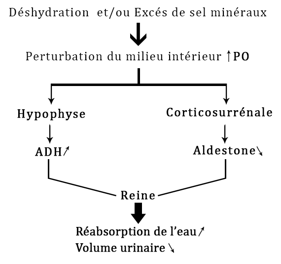

Le milieu intérieur et sa Régulation
I - Définition et caractéristique :
Le sang et la lymphe forme le milieu intérieur donc le milieu intérieur et l’ensemble des liquides de l’organisme (à l’extérieur des cellules).
Le milieu intérieur possède deux caractéristiques :
- Caractère physico-chimique : stable la concentration la pression osmotique le PH la température les charges électriques.
- Caractère dynamique : renouvelable permanent de son homogénéité.
II - Composition du milieu intérieur :
1 - Le sang : est un tissu conjonctif liquide suite à une centrifugation du sang on observe les principaux composants plasma (eau, sel minéraux, glucose, acide aminés).
• Globule blanc ou les leucocytes (défense de l’organisme)
• Globule rouge (Hématies) : transport des gaz respiratoires.
• Plaquettes : assurent la coagulation du sang empêche une hémorragie.
2 - La lymphe : est un liquide clair et incolore avec une composition voisine de celle du sang mais prive de globules rouges
• Les différents types de lymphes :
- Lymphe interstitielle ou lymphe non canalisé :
- Liquide interstitielle formé à partir du plasma, dans lequel baigne toutes les cellules de l’organisme.
- Lymphe canalisée : le liquide interstitiel est partiellement absorbé et repasse dans le sang. Le reste de la lymphe interstitielle (liquide interstitiel) entre dans les vaisseaux lymphatique et forme la lymphe canalisée.
• Le rôle de la lymphe : elle transporte les nutriments lipidiques issue de la digestion.
La lymphe canalisée est débarrassée des agents infectieux (microorganisme, toxines) par des cellules immunitaires lors de son passage dans les ganglions lymphatique.
III - Homéostasie (Constance du milieu intérieur) :
Définition : l’Homéostasie est un l’ensemble des réactions qui maintiennent les caractéristiques du milieu intérieur. Elle a pour objet de maintenir la teneur en eau, en sels minéraux de l’organisme a des valeurs normales.
IV - Exemple de régulation du milieu intérieur :
1 - Intervention des reins :

Le néphron : unité structurale et fonctionnelle du rein. Un néphron mesure entre 3 et 4 cm de longueur
NB : Les néphrons produisent l’urine
Formation de l’urine :
Comparaison plasma / l’urine :
Caractéristique de l’urine : l’urine est un liquide jaune clair ses principaux constituant sont, (l’eau, des molécules organique, acide urique) des ions minéraux (Na+,K+,Cl-) variante selon l’apport alimentaire.
Comparaison de l’urine avec le plasma :
Le Rein arrête toutes les substances nutritives indispensable à l’organisme protide, glucides et lipides. Le rein laisse passer les éléments en excès dans le sang comme l’eau.
Tout trouble dans le fonctionnement des reins entraines des problèmes de santé.
Excès durée dans le sang : Urémie
Albumine dans les urines : Albuminurie
Glucose dans les urines : Glucosurie
Le rôle du néphron :
Les néphrons produisent d’urine.
L’expiration sanguine s’effectue grâce à trois mécanismes.
La filtration assurée par les gloméale.
La réabsorption sélective (retour, des glucides et lipides, protides dans le sang)
La sécrétion (libérations des molécules organiques urée, acide urique dans l’urine définitive)
La formation de l’urine permet de retenir dans le sang, les éléments dont l’organisme a besoin et d’éliminer les substances toxiques.
La formation de l’urine primitive (ou pré-urine glomérulaire)
Le sang entre dans le rein par l’artère rénale.
Celle-ci se divise en artériole ramifiée. En fins capillaires pelotonnes appelés glomérules.
Les glomérules sont en contact avec la capsule de Bowman, c’est au niveau de cette capsule que s’effectue la filtration.
Glomérulaire du sang le liquide ainsi obtenu est l’urine primitive.
La formation d l’urine définitive :
Le tubule du néphron modifie la composition de l’urine primitive. Par un phénomène du réabsorption tubulaire, 99% de l’urine primitive (glucose, acide aminées et eau) repasse dans les capillaires proches du tubule, par contre d’autre substance absente dans l’urine primitive apparaissent dans l’urine définitive.
Elles sont secrétées dans le tubule : ce sont des ions, l’acide urique, l’urée, l’urine définitive est recueillie dans les tubes collecteurs est excrétée vers la vessie.
2 - Les différentes fonctions des reines :
L’excrétion des déchets azotées (urines, urée, acide urique)
Le Maintien de l’équilibre en eau et en sel minéraux du milieu intérieur.
Le maintien du pH sanguin pH=7,4
La production des hormones la rénine.
V – Volémie et Pression osmotique
- Pression Osmotique : pression exercée par les substances dissoutes dans un compartiment.
- La volémie : volume sanguin total entrée du substance dissouts dans le milieu intérieur provoque l’augmentation de la pression osmotique suivi de l’entrer d’eau dans le milieu intérieur.
Entré d’eau dans le milieu intérieur provoque une diminution de la pression osmotique suivi d’une sortie de l’eau du milieu intérieur.
VI – Contrôle hormonal de l’excrétion urinaire
